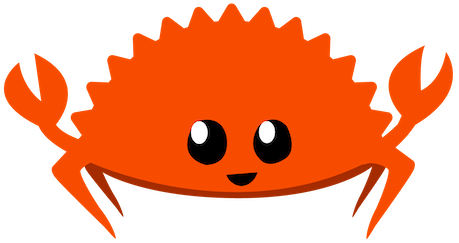

<!DOCTYPE html>
<html lang="en">
<head>
  <meta charset="UTF-8" />
  <meta http-equiv="X-UA-Compatible" content="IE=edge" />
  <meta name="viewport" content="width=device-width, initial-scale=1.0" />
  <title>jrj.io</title>
  <style>
    :root {
      --bg: #000000;
      --fg: #33ff33;
      --char-width: 8px; /* Approximate width of a monospace character */
    }
    * { box-sizing: border-box; }
    html, body {
      margin: 0;
      height: 100%;
      background: var(--bg);
      color: var(--fg);
      font-family: "Fira Code", "Menlo", "Consolas", monospace;
      font-size: calc(100vw / 60); /* Dynamically adjust font size */
      line-height: 1.4;
      overflow: hidden;
    }
    #terminal {
      position: relative;
      width: 100%;
      height: 100%;
      padding: 20px;
      overflow-y: auto;
      white-space: pre-wrap;
    }
    #terminal::before {
      content: "";
      position: absolute;
      inset: 0;
      pointer-events: none;
      background: repeating-linear-gradient(180deg, rgba(0,0,0,0) 0 2px, rgba(0,0,0,0.05) 2px 3px);
    }
    #terminal.flicker {
      animation: flicker 0.15s steps(1) infinite;
    }
    @keyframes flicker {
      0%, 100% { opacity: 0.93; }
      60% { opacity: 1; }
    }
    .cursor {
      display: inline-block;
      width: 0.6em; /* Match the width of a single character */
      height: 1em; /* Match the height of a single line */
      background: var(--fg);
      vertical-align: bottom; /* Align with text baseline */
      transform: translateY(-20%); /* Nudge cursor slightly upward */
      animation: blink 1s steps(2, start) infinite;
    }
    @keyframes blink {
      0%, 49% { opacity: 1; }
      50%, 100% { opacity: 0; }
    }
    .clickable { text-decoration: underline; cursor: pointer; color: aqua; }
    a { color: inherit; text-decoration: underline; }
    .yellowbold { color: #ffcc00; font-weight: bold;}
img {
  filter: hue-rotate(90deg) saturate(50%); /* Muted green tint */
}
  </style>
</head>
<body>
  <div id="terminal" class="flicker" tabindex="0"></div>
  <script>
    (() => {
      const term = document.getElementById("terminal");
      const charDelay = 3;

      const COMMANDS = {
        help: () => printLines([
          "Available commands:",
          "  <span class='clickable' data-command='what'>what</span>             – info about this service",
          "  <span class='clickable' data-command='about'>about</span>            – about JRJ",
          "  <span class='clickable' data-command='contact'>contact</span>          – how to reach JRJ",
          "  <span class='clickable' data-command='wally'>wally</span>            - who's a good boy?",
          "  <span class='clickable' data-command='clear'>clear</span>            – clear the screen",
          "  <span class='clickable' data-command='help'>help</span>             – show this list",
          "  <span class='clickable' data-command='open [shortcode]'>open [shortcode]</span> – open url in new tab",
          " ",
        ]),
        what: () => printLines([
          "JRJ's personal link shortener",
          "Built in Rust ",
          "Source: https://github.com/jrjones/redirective",
          "Type 'help' to explore.",
          " ",
        ].map(linkify)),
        about: () => printLines([
          "Joseph R. Jones (JRJ)",
          "Scruffy-looking nerd herder",
          "and world's foremost expert",
          "in self-proclaimed thought leadership",
          "https://jrj.org",
          " ",
        ].map(linkify)),
        contact: () => printLines([
          "This is kind of one of those \"if you know, you know\" situations.",
          "If I wanted you to contact me you would know how to contact me.",
          "",
          "That said, JRJ...",
          " - Is on twitter/X as @jrj (but doesn’t really post anymore)",
          " - Used to blog at https://blog.jrj.org (but the site is archived)",
          " - Is on LinkedIn -> https://jrj.io/in (but doesn’t accept unknown connections)",
          " ",
        ].map(linkify)),
        wally: () => printLines([
          "Who's a good boy?",
          "<a href=wally.png></a>",
          "Wally's a good boy!",
          " ",
        ].map(linkify)),
        rusty: () => printLines([
          "cargo build --release",
          "<span class='yellowbold'>Compiling</span> metrics.rs",
          "<span class='yellowbold'>Compiling</span> main.rs",
          "<span class='yellowbold'>Compiling</span> http.rs",
          "<span class='yellowbold'>Compiling</span> git_sync.rs",
          "<span class='yellowbold'>Compiling</span> errors.rs",
          "<span class='yellowbold'>Compiling</span> config.rs",
          "<span class='yellowbold'>Compiling</span> cache.rs",
          "<span class='yellowbold'>Finished</span> `release` target(s) in 1.23s",
        ]),
        clear: () => { term.innerHTML = "jrj.io redirective shell v1.0<br>Type 'help' for a list of commands."; newPrompt(); },
        open: (args) => {
          if(args[0]) {
            window.open(args[0], "_blank");
            print("Opening " + args[0]);
          } else {
            printLines(["Usage: open <url>"]); 
          }
          newPrompt();
        }
      };

      let inputSpan = null;
      let cursorSpan = null;

      function scrollBottom() { term.scrollTop = term.scrollHeight; }

      function typeChars(str, cb) {
        let i = 0;
        (function type() {
          if (i < str.length) {
            inputSpan.textContent += str[i++];
            setTimeout(type, charDelay);
          } else if (cb) cb();
        })();
      }

      function linkify(text) {
        return text.replace(/(https?:\/\/[\w\-._~:/?#[\]@!$&'()*+,;=%]+)/g, '<a href="$1" target="_blank">$1</a>');
      }

      function print(line = "", cb) {
        const div = document.createElement("div");
        div.innerHTML = line; // Render HTML content properly
        term.appendChild(div);

        let i = 0;
        (function type() {
          if (i < line.length) {
            div.innerHTML = line.slice(0, i + 1); // Update content progressively
            i++;
            setTimeout(type, charDelay);
          } else if (cb) cb();
        })();
      }

      function printLines(lines) {
        let i = 0;
        (function printNext() {
          if (i < lines.length) {
            print(lines[i++], () => setTimeout(printNext, 100)); // Wait for the current line to finish before starting the next
          } else {
            newPrompt();
          }
        })();
      }

      function runCommand(cmdLine) {
        const parts = cmdLine.trim().split(/\s+/);
        const cmd = parts[0].toLowerCase();
        const args = parts.slice(1);
        if(COMMANDS[cmd]) {
          COMMANDS[cmd](args);
        } else if(cmd) {
          print("Command not found: " + cmd);
          newPrompt();
        }
      }

      function newPrompt() {
        const wrapper = document.createElement("div");
        wrapper.innerHTML = `<span class="prompt">$ </span><span id="input"></span>`;
        inputSpan = wrapper.querySelector("#input");
        cursorSpan = document.createElement("span");
        cursorSpan.className = "cursor";
        wrapper.appendChild(cursorSpan); // Append cursor after input
        term.appendChild(wrapper);
        scrollBottom();
      }

      function handleKey(e) {
        if (!inputSpan) return;
        e.preventDefault();
        if (e.key === "Backspace") {
          inputSpan.textContent = inputSpan.textContent.slice(0, -1);
        } else if (e.key === "Enter") {
          const cmdLine = inputSpan.textContent.trim();
          if (cmdLine === "") {
            newPrompt(); // Create a new prompt if no command is entered
            return;
          }
          cursorSpan.remove(); // Remove cursor after command
          inputSpan = null;
          cursorSpan = null;
          runCommand(cmdLine);
        } else if (e.key.length === 1) {
          inputSpan.textContent += e.key;
        }
        scrollBottom();
      }

      function boot() {
        // Add static introductory lines with normal spacing
        term.innerHTML = `jrj.io redirective shell v1.0<br>Type 'help' for a list of commands.`;
        newPrompt();
        // Add a 200ms delay before typing 'help' and pressing Enter
        setTimeout(() => {
          typeChars("help", () => handleKey({ key: "Enter", preventDefault: () => {} }));
        }, 500);
      }

      term.addEventListener("click", () => term.focus());
      document.addEventListener("keydown", handleKey);
      term.focus();

      document.addEventListener("click", (e) => {
        const el = e.target.closest(".clickable");
        if (el) {
          const command = el.dataset.command || el.textContent.trim();
          typeChars(command, () => handleKey({ key: "Enter", preventDefault: () => {} })); // Type the command and press Enter
        }
      });

      boot();
    })();
  </script>
</body>
</html>
